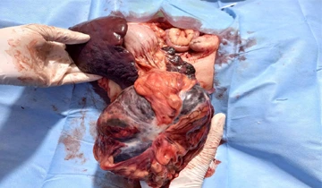
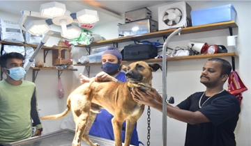
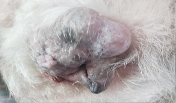
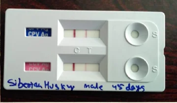
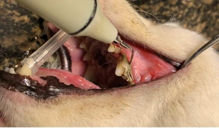

“We Love Pets As Much As You Do” — Our professional veterinarians offer a full range of surgical and medical facilities for small animals and more.
From emergency surgery to routine consultations — every service your pet needs, delivered with expertise and compassion.
Our clinic is equipped with a state-of-the-art Ultramodern Surgery Operation Theatre. We have successfully conducted numerous specialized and complicated surgical procedures across a wide variety of species. At any point during their life, your pet may need surgery — our veterinarians use the most up-to-date anesthesia and surgical equipment available, ensuring the best possible outcome.

We provide same-day appointments for major surgeries and up to two-week advance appointments for routine procedures such as neutering, dental surgery, and other elective procedures. Our highly trained team ensures safe pre-anesthetic protocols, attentive continuous monitoring before, during, and after surgical procedures to facilitate a smooth and quick recovery.
Ticks and fleas are common problems in dogs and cats and can transmit dangerous diseases. We provide professional advice on effective parasitic control tailored to your pet’s environment and health history. We have several options to protect your pets, including topical applications, oral medications, and special tick baths to keep your companion completely pest-free and comfortable.
In life-threatening emergencies, immediate and specialized attention is available. Our critical care unit is equipped with continuous monitoring devices and life-support tools. Whether it’s sudden distress, poisoning, trauma, or worsening of chronic ailments, our prompt triage and highly equipped emergency team step in to stabilize your pets and work towards resolving the emergency effectively.
Day-care facilities for pets suffering from critical emergencies have been established at our clinic. We are equipped with thermoregulatory balance, oxygen therapy, respiratory support, and advanced patient monitors for better management of critical patients. Our doctors keep you updated daily and provide client education so you always know exactly what’s happening.

Our imaging diagnostics setup is an integrated non-invasive modality to help clearly visualize soft tissues such as the heart, liver, bladder, kidneys, and gastrointestinal tract. Ultrasonography is completely painless and allows our expert veterinary specialists to assess the exact health condition, track pregnancy, and locate internal abnormalities without proceeding to immediate surgical exploration.
We aim to provide a stress-free environment paired with compassionate routine health checks that ensure longevity and well-being for your companion animal. From comprehensive medical checkups, treating mild infectious ailments, wound dressings, and chronic medication management, our clinical team focuses on building a foundation of great lifelong health across all age phases.

Regular vaccination of your furry babies protects against various infectious diseases. We are providing complete vaccination facilities for dogs, cats, birds, and other species of domestic animals. Vaccines help your pet’s immune system detect and respond to different infections before they can cause damage — vaccinating at the appropriate times is essential.
Routine deworming of pups followed by the standard protocol for different age groups is advised for companion animals. Puppies should be dewormed every two weeks before they reach twelve weeks of age, then once a month until six months old. For effective protection, all dogs should be wormed every three months — common worms can be easily controlled with this regular schedule.

Immediate reliable results are essential during complex medical diagnostics. The advanced in-house veterinary laboratory guarantees our clinicians rapid results covering complete blood counts (CBC), comprehensive chemistry profiles, cytology, and urine tests. Our imaging diagnostics seamlessly supplement bloodwork to accurately trace specific conditions.
Compassionate close-monitoring and therapeutic fluid systems guarantee critical patients obtain specific treatment and stabilization. A multi-layered safety check helps properly maintain patient comfort while providing emergency pain relief management, round-the-clock physical evaluations, and immediate pharmaceutical intervention based on shifting vital parameters.
Through routine pet lifestyle discussions, doctors identify previously unnoticed micro-symptoms before illnesses progress. Comprehensive physical examinations during all routine visitations support effective holistic assessments determining weight metrics, body temperature conditions, joint mobility functionality, and overall health to craft an impeccable treatment plan.

We aim to provide thorough clinical investigation and diagnosis for all types of medical ailments, ensuring accurate diagnosis and early recovery. Our team at VetCare is well-trained in different medical therapies to manage the healthcare needs of your pet across organ systems. We are also initiating blood collection and transfusion services for small animals.
We have a team of expert veterinary gynecologists to deal with a variety of small animal gynecological issues such as infertility, mismating, pseudopregnancy, pyometra, and various hormonal disorders. Providing treatment and advice to owners for successful breeding has always been our area of interest, supporting both clinical diagnosis and postgraduate research.
Our clinic is well-equipped with ultramodern dentistry equipment and facilities to serve the dental needs of pet patients — including teeth extraction, scaling, polishing, and other cosmetic dental procedures. You can safely assume they will be treated with the utmost care by a team of veterinarians and dental technicians versed in both dental health and general anesthesia.
Our dedicated internal Pet Shop offers a premium section of pet accessories, leashes, custom grooming kits, and specially formulated high-nutrition prescription diet packets perfectly matching our clinical recommendations. We maintain an impressive inventory covering highly effective pharmaceutical stock, making it tremendously simple for caring pet parents to retrieve prescribed medications promptly.
Book an appointment today and bring your pet to the experts.